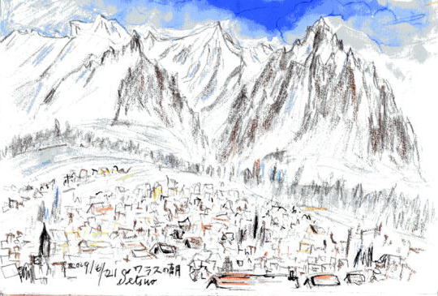
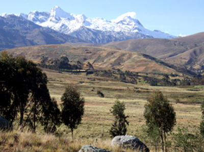
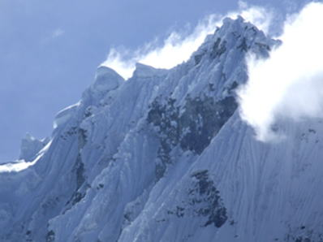
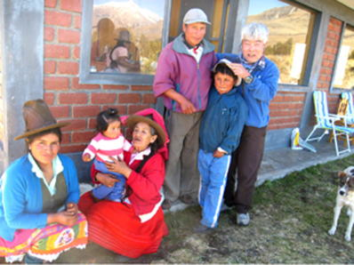
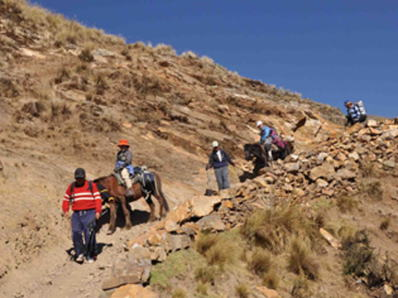
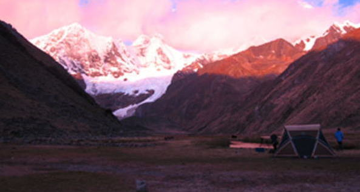
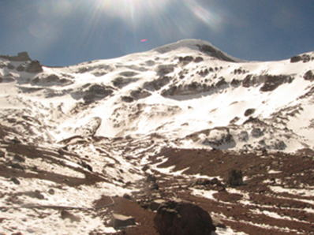
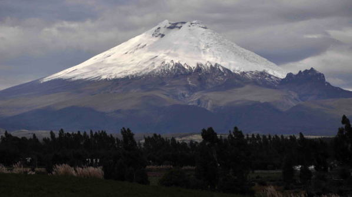

|
|||||||||||||||||||||||||||
|
アンデスを巡る旅—ペルーとエクアドル— |
| 実 施 日 | ２００９年６月１８日〜７月２０日 | |||
| リーダー | 松尾 治 | |||
| 報 告 者 | 松澤節夫 | |||
| HP制作者 | 髙井（紀） | |||
| 参加者数 | ５名 （会員１名、非会員４名） | |||
|  |
| アンデス登山基地・ワラスの街 |
| グループのプロフィール |
| ・リーダー・松尾治さん |
| 九州大学WV・OB、富士山専科の山岳写真家で、2005・2008年のASC東チベット・カンリガルポ遠征に参加しています |
| ・世話人・三井孝夫さん |
| アンデス山系の登山にうちこんでいる68歳。長年、南米での建築プロジェクトに深くかかわり 、定年まぢかから、ペルー・アンデスを中心に登り続けて、ついにワラスの北東、3800ｍの高さに「コフップ山荘」まで建ててしまった熱中ぶり。 |
| トレッキングの仕組み |
| ネパール（行ったことはないけれど）のシステムに似ていて、隊荷はロバ３〜４頭に積んでキャンプ地に先行。私はもっぱら馬の背に揺られて、4800mほどの峠越えや山岳展望、野生動物や花の観察、村人との交流、キャンプサイトでのビール・パーティー、鱒釣り、スケッチなど楽しむ忙しい毎日です。 ペルーの料理は、野菜・果物がとても豊富で地鶏も歯ごたえと風味は抜群。 コックは、三井さんの指導で日本料理も上手に調理してくれます。 1日の歩行は15km程度。キャンプサイトは3000〜4200ｍ程度です。 |
| ブランカ山群（ペルー） |
| 日本人が初登攀した壮絶な壁や鋭鋒も次々と見えて興奮します。 |
|  | A |  |
| コフップ山荘（高度順化と休養場所）からの展望 | ロンドイ（5870ｍ）の西壁 |
|
| （ＨＰをご覧下さい） |
| 70歳の誕生日を村人たちが祝ってくれた （松尾治撮影） |
| 画像をクリックすると、動画になります |
|
画像が現れない場合は、この頁の上部にある黄色い警告バーをクリックして下さい
|
|  | A |  |
| コフップ山荘の集い・村人たち | インカ古道を辿る 撮影：松尾治 |
|  |
| イエルパハ（6634ｍ）。ハウアコーチャ湖のキャンプサイト（4066ｍ）にて |
| エクアドルの山々 |
| キトー（首都）に在住35年の和田俊光さん（金沢大学AC・OB）夫妻を訪ね、 私がチンボラソ（6310ｍ）登山を計画して以来、17年ぶりに再会しました。 |
|  |
| チンボラソは赤道直下の火山 氷河とセラックに守られている ウインパー記念小屋（5000ｍ）にて |
|  |
| コトパクシ（5897ｍ）は赤道直下の活火山 撮影：松尾治 |
| おわりに せっかく宝の山を眼前にして、高度順化も5000m+までOK.だったので、近くのピークを登ってみたくなった老山屋の願望でした。 また、スキー滑降に好適なピークや斜面（氷河）はたくさんありますが、残念ながら雪線が4800ｍ以上と高く、降雪量も5000ｍ以下は少ないらしい。 |
| 【追 悼】 私たちの旅をアレンジしてくれた三井孝夫さんは、コフップ山荘を共同経営するガイド・クラウディオ（52歳、私の誕生日にハープの弾き語りをしてくれた）とともに、ワスカラン北峰（6655m）を、登攀中の7月25日に雪崩に遭い、クレヴァスに落下して逝去されました。 エクアドルの和田俊光さんがボランティア的に現地入りしてくれ、情報収集と捜索継続の可能性を探ってくれています。運悪く、天候の悪い周期に入っていて、連日の降雪つづきで、遭難時に遺体の位置は確認されたもの未だ収容されていません。ご家族も31日、現地に向かいましたが、ペルーの登山協会は6日間の捜索で解決がつかない場合は打ち切りするとの厳しい状況です。ご冥福を祈りつつ。 2009年 8月 1日記す |